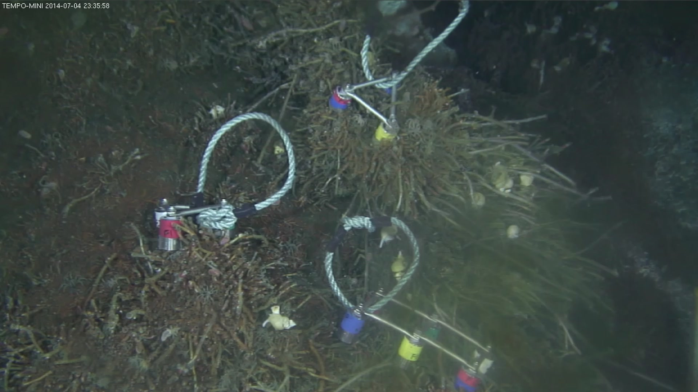
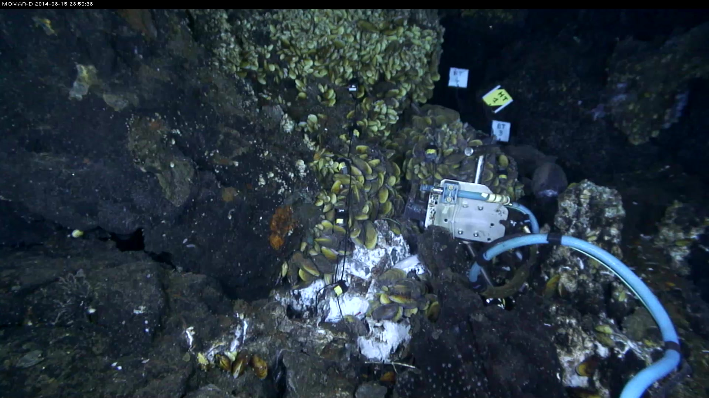
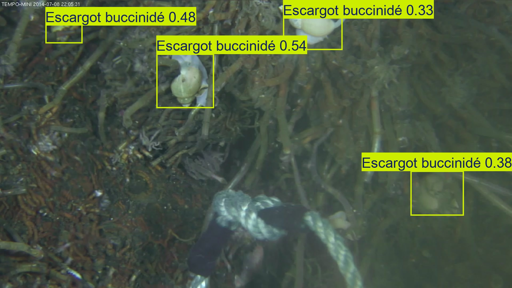
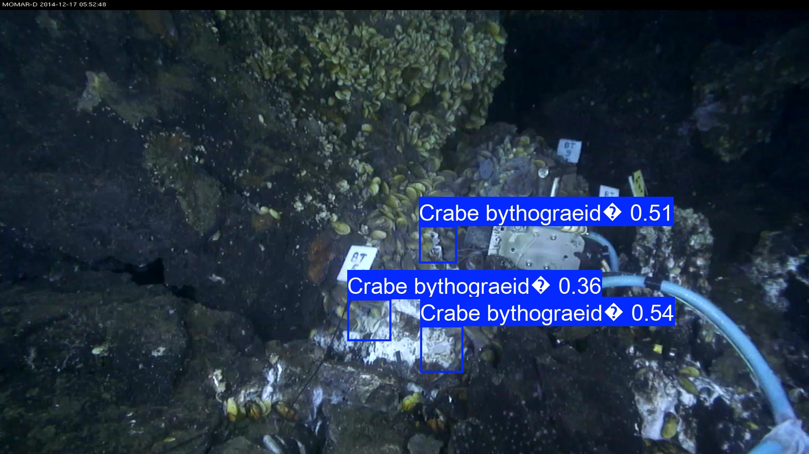

Object detection with YOLO
| Author(s) |
|
| Tester(s) |
|
| Reviewers |
|
OverviewQuestions:
Objectives:
How can I run YOLO models on marine images to detect species using Galaxy?
Requirements:
Detect marine species in underwater images using a pretrained YOLOv8 model
Understand the requirements and output types of a detection model
Time estimation: 45 minutesSupporting Materials:Published: May 6, 2026Last modification: May 8, 2026License: Tutorial Content is licensed under Creative Commons Attribution 4.0 International License. The GTN Framework is licensed under MITpurl PURL: https://gxy.io/GTN:T00580version Revision: 3
YOLO (You Only Look Once) is a fast, deep learning-based algorithm for real-time object detection. It predicts object classes and bounding boxes in a single pass over the image. YOLOv8 is a specific version, offering improved accuracy and speed.
In this tutorial, you will use Galaxy to run YOLOv8 model for Object Detection using real underwater images from the SEANOE dataset.
AgendaIn this tutotial, we will cover:
Detection of marine species
Input Dataset
We will use selected images from the SEANOE dataset Lebeaud et al. 2024.
The SEANOE collection features real underwater images captured by deep‑sea observatories as part of a citizen science initiative called Deep Sea Spy. These non‑destructive imaging stations continuously monitor marine ecosystems and provide snapshots of various fauna. In this dataset, multiple annotators, including trained scientists and enthusiastic citizen scientists, have manually labeled images with polygons, lines, or points highlighting marine organisms. These annotations were then cleaned and converted into bounding boxes to create a training-ready dataset for object detection with YOLOv8. Though the exact species vary, images often include deep-sea fish, species, making this dataset well-suited for practicing detection tasks.


Get data
Hands On: Data Upload
- Create a new history for this tutorial
- Give it a name (example: “DeepSeaSpy Yolo tutorial”) for you to find it again later if needed.
To create a new history simply click the new-history icon at the top of the history panel:
- Click on galaxy-pencil (Edit) next to the history name (which by default is “Unnamed history”)
- Type the new name
- Click on Save
- To cancel renaming, click the galaxy-undo “Cancel” button
If you do not have the galaxy-pencil (Edit) next to the history name (which can be the case if you are using an older version of Galaxy) do the following:
- Click on Unnamed history (or the current name of the history) (Click to rename history) at the top of your history panel
- Type the new name
- Press Enter
Import image data files and models from SEANOE marine datawarehouse.
DeepSeaSpy image data files and models as a zip file:
https://www.seanoe.org/data/00907/101899/data/115473.zip
- Copy the link location
Click galaxy-upload Upload at the top of the activity panel
- Select galaxy-wf-edit Paste/Fetch Data
Paste the link(s) into the text field
Press Start
- Close the window
- Unzip ( Galaxy version 6.0+galaxy0) with the following parameters:
- “Input file”:
115473.zipThis will create a data collection in your history where all archive files will be unzipped.
- Unhide galaxy-show-hidden the models data files:
- In the history search bar, enter:
name:detection deleted:false visible:any- Then unhide galaxy-show-hidden the 2 model files
- “dataset_seanoe_101899_YOLOv8-weights-for-Bythograeidae-detection” and
- “dataset_seanoe_101899_YOLOv8-weights-for-Buccinidae-detection”.
If your history contains hidden datasets you will see galaxy-show-hidden “Include hidden” button directly above the dataset display.
To un-hide datasets:
- Type
visible:hiddenin the search box- Select datasets you want to un-hide
- Click the dropdown that would appear at the top of the history;
- Select “Unhide” option.
Alternatively, you can:
- click galaxy-show-hidden “Include hidden” button directly above dataset display. This will cause hidden datasets to appear in history along with normal (un-hidden) datasets;
- hidden datasets are distinguished by having galaxy-show-hidden within dataset box. Clicking on this icon will un-hide a given dataset;
- Select a sample of 100 image files and create a dedicated data collection
- History search
extension:jpg deleted:false visible:anythen- click on “Select” and “Select All”.
- click on “All 3979 selected” and “Build Dataset List” (or “Auto build list” depending on the selection mode),
- select 100 files and give a name of the data collection, “DeepSeaSpy 100 images sample” for example.
To select only last 100 files, you can use the history search function and specify
extension:jpg deleted:false hid>XXXX visible:anyin the search bar where XXXX is the id of the last image dataset minus 100. For exampleextension:jpg deleted:false hid>3885 visible:anyif you have images until the history dataset ID 3985.Create class name file “Buccinide_classnames”, copying and pasting this content in the file uploader: Optional step - Only if using under “Galaxy Version 8.3.0+galaxy5” tool version
Autre poisson Couverture de moules Couverture microbienne Couverture vers tubicole Crabe araignée Crabe bythograeidé Crevette alvinocarididae Escargot buccinidé Ophiure Poisson Cataetyx Poisson chimère Poisson zoarcidé Pycnogonide Ver polynoidé Vers polynoidés
- Click galaxy-upload Upload Data at the top of the tool panel
- Select galaxy-wf-edit Paste/Fetch Data at the bottom
- Paste the file contents into the text field
- Press Start and Close the window


Model
This dataset provides two pretrained YOLOv8 detection models tailored for the marine species found in SEANOE. One model detects Buccinidae (a family of sea snails), and the other targets Bythograeidae (a family of deep-sea crabs). These models were trained on cleaned annotation sets that contain thousands of examples—for instance, the Buccinidae set includes over 14,900 annotations in total. For this tutorial, you’ll find two model files—*.pt files—each accompanied by the appropriate class_names.txt file. You can upload either or both to Galaxy to run detection experiments on your underwater images.
Run YOLOv8 in detect mode
Hands On: Detect Buccinid snails on images
- Perform YOLO image labeling ( Galaxy version 8.3.0+galaxy2) with the following parameters:
- param-file “Input images”:
DeepSeaSpy 100 images sample(click the param-collection button, then select “DeepSeaSpy 100 images sample” from the list)- param-file “YOLO class name file”:
Buccinide_classnames(input plain text file that lists the names of the classes the model can detect)- param-file “Model file”:
dataset_seanoe_101899_YOLOv8-weights-for-Buccinidae-detection(click the “…” button, then search for the name of the file or just filter with “.pt” statement)- “Prediction mode”:
detect- “Image size”:
1000- “Confidence”:
0.25- “IoU”:
0.45- “Max detections”:
300Warning: Models typeThe model is trained only for detection, not segmentation.
Try changing the confidence and IoU thresholds (this is used for Non-Maximum Suppression (NMS), which removes overlapping detections) to see how detection results vary. It helps you find a good balance between sensitivity and accuracy.
Comment: Additional information on class names file and parametersConcerning the class names file: Each class name must be on its own line, in the same order used during model training. So the class ID 0 corresponds to Buccinidae, and 1 to Bythograeidae. Concerning tool parameters:
- “Image size”: Use 1000 (or a smaller number like 640 if processing speed is important). This controls how much the image is resized before prediction. Smaller values = faster but possibly less accurate.
- “Confidence”: Set to 0.25 (25%). This controls how confident the model must be to report a detection. If you increase this value (e.g., 0.5), you’ll get fewer detections, but they’ll be more confident. If you lower it (e.g., 0.1), you may get more results, but possibly more false positives.
- “IoU”: Set to 0.45. This is used for Non-Maximum Suppression (NMS), which removes overlapping detections. A higher IoU value (e.g., 0.7) keeps more overlapping boxes. A lower IoU (e.g., 0.3) removes more overlaps, which may help clean up crowded images.
- “Max detections”: Set a reasonable cap like 300. This limits the number of objects detected per image.
Explore the Outputs
After running the tool, Galaxy will give you several output files for each image. Let’s go through what each one means and how to use them:
Text files (*.txt)
These are plain text files containing the detection results. Each line in a file shows:
<class_id> <confidence_score> <x_center> <y_center> <width> <height>
For example: 0 0.82 350 200 100 120
Question
- What is the meaning of these lines ?
- Class ID 0 (in our case, Buccinidae)
- Detected with 82% confidence
- The bounding box is centered at (350, 200) and has a width of 100 and height of 120 (in pixels, relative to the image. You can use this file to do further analysis, like counting species or tracking locations over time
Overlay images (*.jpg)
These are your original images with colored boxes drawn around detected species. Each box also includes:
The class name and the confidence score. For example, you might see a box labeled:
Esxcargot buccinidé 0.40

And if you reexecute the Yolo labeling tool specifying the “dataset_seanoe_101899_YOLOv8-weights-for-Bythograeidae-detection” model file, you will obtain detection result for crabs.

These images are useful for visually checking whether detections are correct or if something was missed.
Comment: What's the `?` in the labels ?The
?character you see in the annotation is due to an incompatibility between the class names in the pre-trained model and the character encoding used on the system where the model was originally trained. This typically happens when non-UTF-8 characters are not properly handled during training or export.
No masks or segmentation files
Since we used detect mode, this tool will not generate segmentation masks (like .tiff or polygon files). Those are only available in segment mode, which we’ll cover in a separate tutorial.
What to Look For
- Are species detected correctly?
- Any false positives or missed detections?
- What confidence levels do you observe?
- How many objects per image?
Next Steps
Want to go further?
- Train your own model on SEANOE annotations using YOLO training tool in Galaxy ( Galaxy version 8.3.0+galaxy2)
- Get more information from YOLOv8 training notebook
You've Finished the Tutorial
Key points
Galaxy simplifies running YOLO models in a user-friendly, reproducible way
Choose your prediction mode according to your model and task
Always check that the model type matches the mode (
detect)Use overlays and annotation files for further analysis or visualization
Frequently Asked Questions
Have questions about this tutorial? Have a look at the available FAQ pages and support channelsUseful literature
Further information, including links to documentation and original publications, regarding the tools, analysis techniques and the interpretation of results described in this tutorial can be found here.
References
- Lebeaud, A., V. Tosello, C. Borremans, and M. Matabos, 2024 Deep-sea observatories images labeled by citizen for object detection algorithms. 10.17882/101899 https://www.seanoe.org/data/00907/101899
Feedback
Did you use this material as an instructor? Feel free to give us feedback on how it went.
Did you use this material as a learner or student? Click the form below to leave feedback.

Citing this Tutorial
- Mohammad Joudy, Yvan Le Bras, Object detection with YOLO (Galaxy Training Materials). https://training.galaxyproject.org/training-material/topics/ecology/tutorials/yolo_predict_deepsea/tutorial.html Online; accessed TODAY
- Hiltemann, Saskia, Rasche, Helena et al., 2023 Galaxy Training: A Powerful Framework for Teaching! PLOS Computational Biology 10.1371/journal.pcbi.1010752
- Batut et al., 2018 Community-Driven Data Analysis Training for Biology Cell Systems 10.1016/j.cels.2018.05.012
@misc{ecology-yolo_predict_deepsea, author = "Mohammad Joudy and Yvan Le Bras", title = "Object detection with YOLO (Galaxy Training Materials)", year = "", month = "", day = "", url = "\url{https://training.galaxyproject.org/training-material/topics/ecology/tutorials/yolo_predict_deepsea/tutorial.html}", note = "[Online; accessed TODAY]" } @article{Hiltemann_2023, doi = {10.1371/journal.pcbi.1010752}, url = {https://doi.org/10.1371%2Fjournal.pcbi.1010752}, year = 2023, month = {jan}, publisher = {Public Library of Science ({PLoS})}, volume = {19}, number = {1}, pages = {e1010752}, author = {Saskia Hiltemann and Helena Rasche and Simon Gladman and Hans-Rudolf Hotz and Delphine Larivi{\`{e}}re and Daniel Blankenberg and Pratik D. Jagtap and Thomas Wollmann and Anthony Bretaudeau and Nadia Gou{\'{e}} and Timothy J. Griffin and Coline Royaux and Yvan Le Bras and Subina Mehta and Anna Syme and Frederik Coppens and Bert Droesbeke and Nicola Soranzo and Wendi Bacon and Fotis Psomopoulos and Crist{\'{o}}bal Gallardo-Alba and John Davis and Melanie Christine Föll and Matthias Fahrner and Maria A. Doyle and Beatriz Serrano-Solano and Anne Claire Fouilloux and Peter van Heusden and Wolfgang Maier and Dave Clements and Florian Heyl and Björn Grüning and B{\'{e}}r{\'{e}}nice Batut and}, editor = {Francis Ouellette}, title = {Galaxy Training: A powerful framework for teaching!}, journal = {PLoS Comput Biol} }
Funding
These individuals or organisations provided funding support for the development of this resource
Congratulations on successfully completing this tutorial!
You can use Ephemeris's
shed-tools installcommand to install the tools used in this tutorial.shed-tools install [-g GALAXY] [-a API_KEY] -t <(curl https://training.galaxyproject.org/training-material/api/topics/ecology/tutorials/yolo_predict_deepsea/tutorial.json | jq .admin_install_yaml -r)Alternatively you can copy and paste the following YAML
--- install_tool_dependencies: true install_repository_dependencies: true install_resolver_dependencies: true tools: - name: yolo_predict owner: bgruening revisions: 983ce2a25b48 tool_panel_section_label: Imaging tool_shed_url: https://toolshed.g2.bx.psu.edu/ - name: yolo_predict owner: bgruening revisions: 3e9d14e5942f tool_panel_section_label: Imaging tool_shed_url: https://toolshed.g2.bx.psu.edu/ - name: yolo_training owner: bgruening revisions: ffee3c7c90eb tool_panel_section_label: Imaging tool_shed_url: https://toolshed.g2.bx.psu.edu/ - name: unzip owner: imgteam revisions: 57f0914ddb7b tool_panel_section_label: Collection Operations tool_shed_url: https://toolshed.g2.bx.psu.edu/